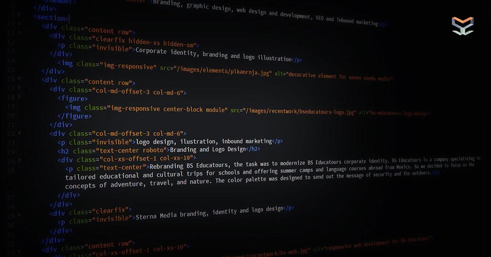

Semántica

Para entender el HTML semántico podemos comenzar por revisar el significado de semántica: La semántica es la parte de la lingüística que estudia el significado de las expresiones lingüísticas.
La semántica en el HTML y HTML5 se refiere al significado o información extra que otorgan los elementos o etiquetas del lenguaje, información que define o describe el contenido, función o sección que contienen.
Esta información es lo que permite que un documento se pueda rastrear de mejor manera. Ayuda a que el contenido se muestre de manera consistente en diferentes aplicaciones y contextos, además de ser fundamental para otorgar accesibilidad y funcionalidad con tecnología de asistencia como lectores de contenido.
HTML semántico desde su inicio.
Desde su inicio el HTML añade significado semántico a el código que comprende un sitio web.
Con etiquetas como h1 , p, img, etc… el desarrollador puede designar un título, añadir encabezados y párrafos e insertar imágenes para así dar forma al documento.
En el HTML cada elemento tiene su propio modelo de contenido, el cual describe el tipo de contenido que este debe contener.
Los modelos de contenido se dividen en las siguientes categorías:
- Elementos para seccionar
- Elementos de metadata
- Interactivos
- Fraseo, de títulos
- Elementos para incrustar
Algunos de estos elementos pueden pertenecer a dos o más categorías por su función y definición.
Al dividir el contenido en secciones por temas o funcionalidad, logramos visualizar el esquema del documento.
Antes del lanzamiento del HTML5 la mejor manera para describir el esquema o índice del contenido, era utilizando los elementos de títulos que van del H1 al H6.
En verdad hoy siguen siendo muy importantes para identificar y generar secciones dentro del contenido.
Aplicar estas etiquetas de títulos correctamente es fundamental para optimizar el contenido para los buscadores y uno de los elementos más importantes en el checklist del On-page SEO.
Los autores pueden otorgar diferente peso y relevancia a las secciones del contenido utilizando el número correspondiente en el título al inicio de dicha sección.
Utiliza el h1> para el título del artículo o página y h2> a h6> para dividir el contenido interno de acuerdo al esquema del documento.
Otro elemento esencial es la etiqueta
que funciona para designar el espacio dentro del documento donde se alberga los elementos que configuran y preparan el documento para ser visualizados correctamente.
Estructura semántica utilizando HTML 5
Con el lanzamiento del HTML5 surgieron nuevos elementos enfocados en aumentar el poder semántico y estructural del lenguaje.
article>, aside>, nav>, section>, footer>, header> y main>
Nuevos elementos como main> o nav> que describen secciones de una página de Internet y nuevos elementos como figure> o time> que describen el tipo de contenido que contienen.
Entender el significado semántico de estos nuevos elementos permite estructurar con detalle el esquema del documento. Lo que ayuda al lector a visualizar y entender mejor el contenido.
Además permite a personas con discapacidad, navegar y consumir tu contenido con mayor facilidad. Además que ayuda a los buscadores como Google rastrear y entender mejor el contenido de tu sitio de internet.
Con el surgimiento de los asistentes digitales y la búsqueda por voz, hoy en día la semántica en el código de tu página es fundamental.
video> – Otra etiqueta nueva en HTML5 indica y otorga funcionalidad para insertar un video con controles para su playback,
Hay 3 formatos de video están soportados por la etiqueta video>: MP4, WebM, y Ogg.
audio> – Indica que el contenido es uno o más archivos de audio, inserta los controles e interfaz para reproducir los archivos.
Los formatos de archivos soportados por la etiqueta audio>: MP3, WAV y Ogg.
canvas> – Este elemento se utiliza para contener gráficos generados por código, Javascript por lo general.
data> – Esta etiqueta es utilizada para entregar un valor asociado a el contenido dentro de la etiqueta para ser leído por alguna aplicación o sistema. Por ejemplo el valor asociado por producto.
mark> – Contiene información marcada o seleccionada, el resultado debe ser texto marcado con un fondo de algún color.
time> – Contiene información de fechas, horarios o tiempo. Al formatear estas fechas, horarios o tiempo con estándares legibles por máquinas, esta información puede servir para guardar información en calendarios y agendar notificaciones.
details> – Este elemento representa detalles adicionales que el usuario puede ver y esconder a su gusto.
summary> – Es el elemento que conforman la cabecera siempre visible del elemento antecesor.
progress> – Contiene información acerca del progreso de una actividad o acción.